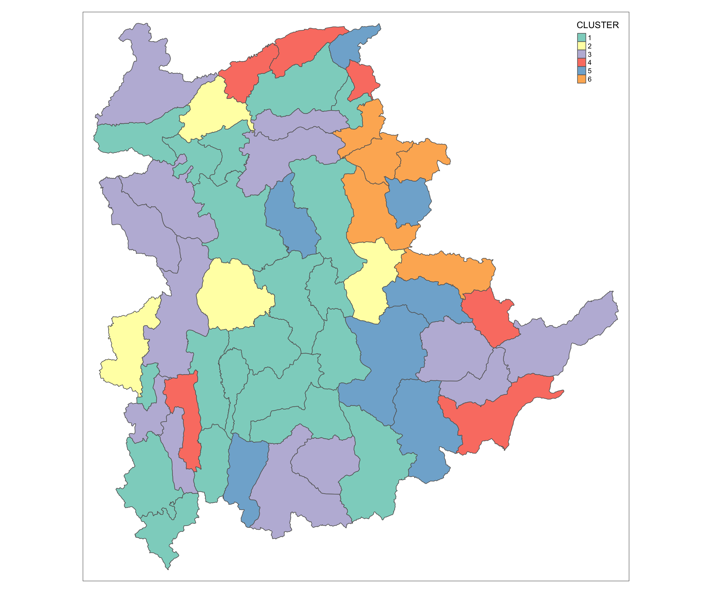
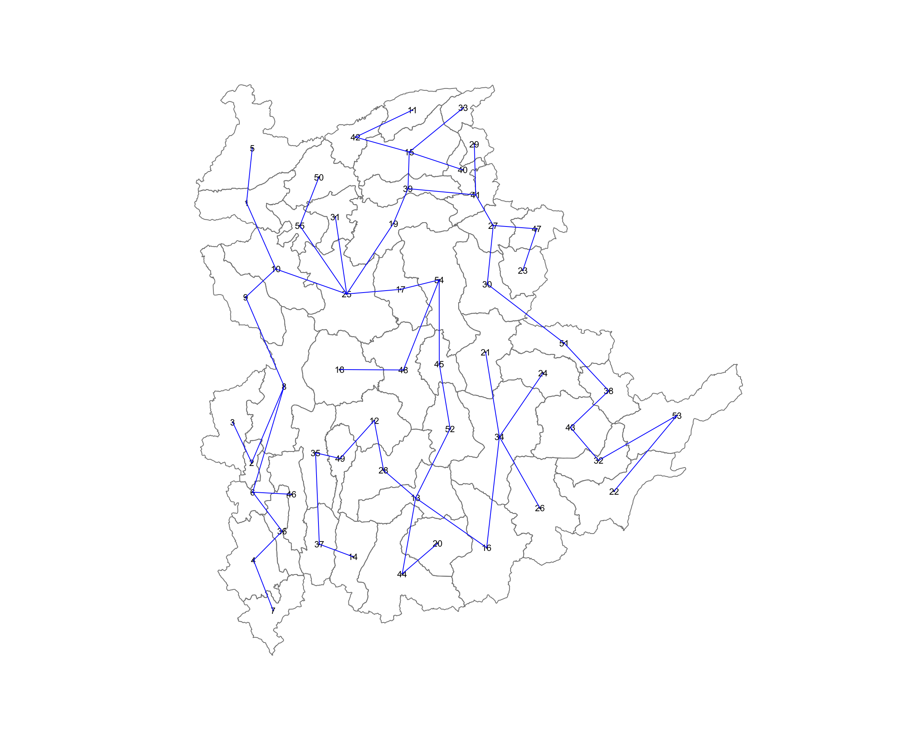
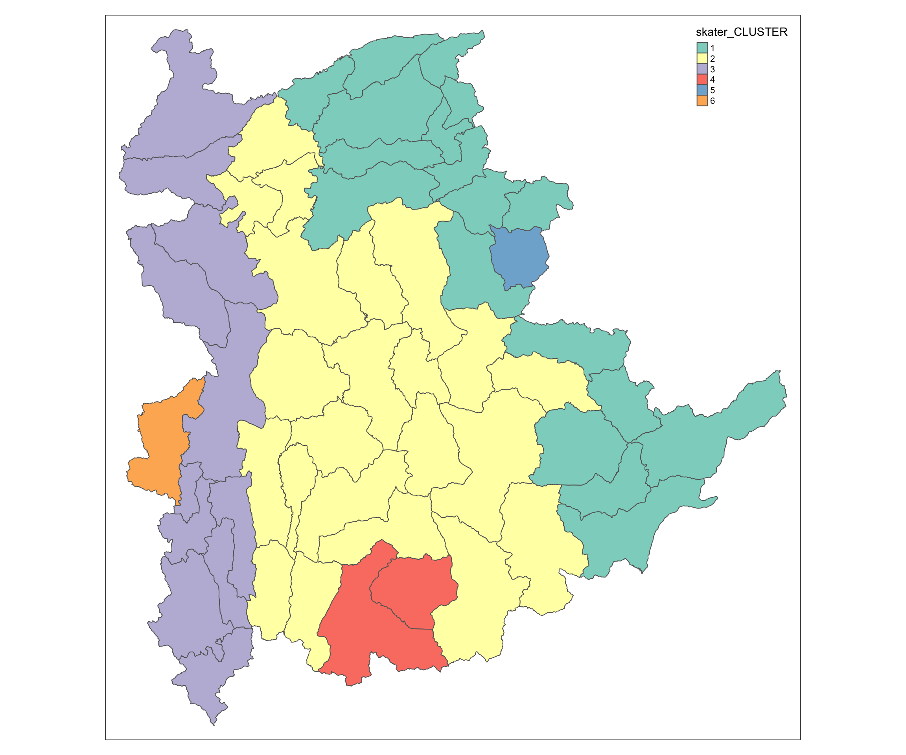
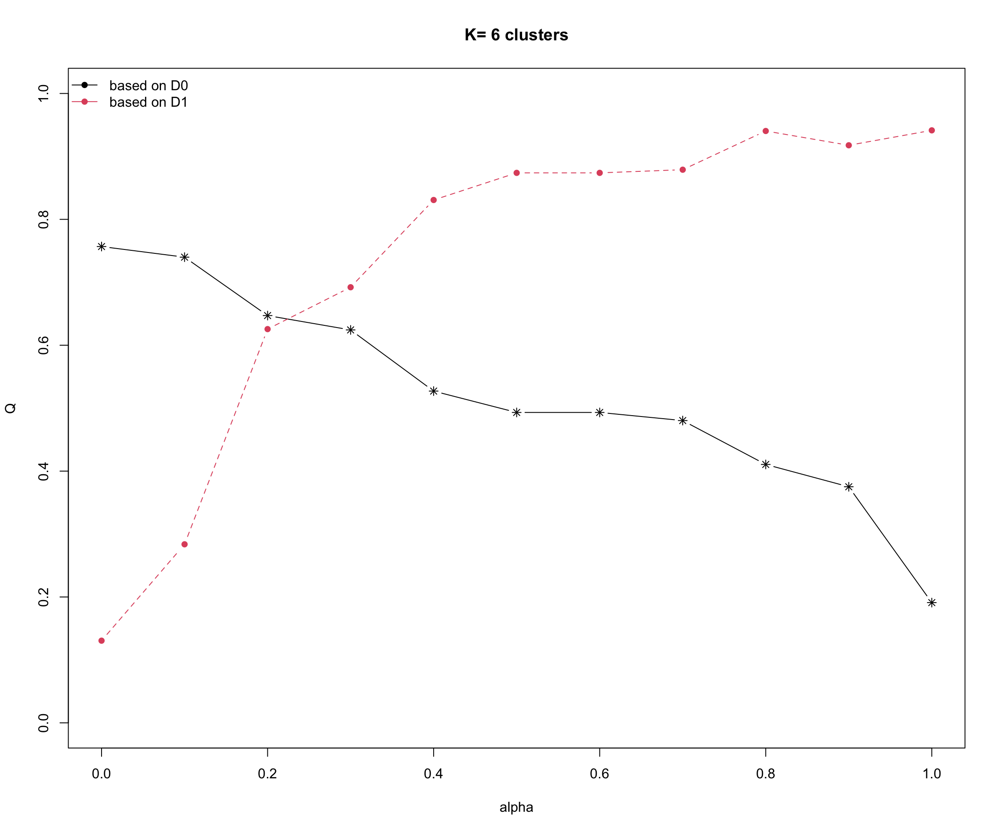
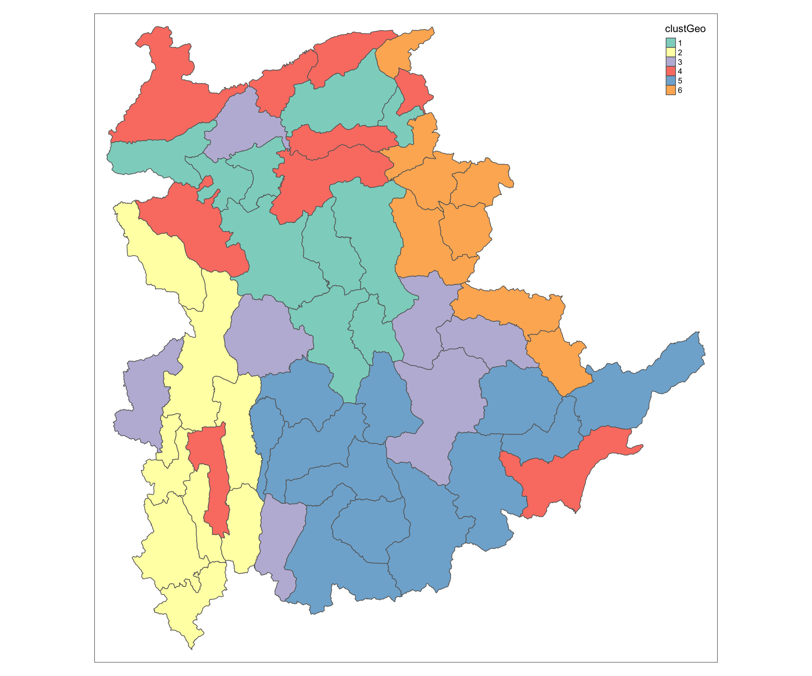
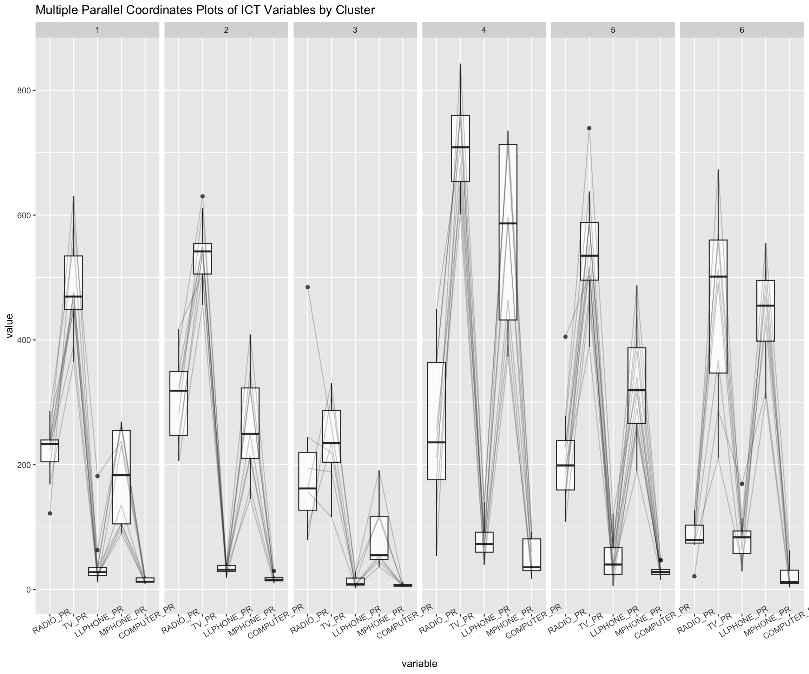

pacman::p_load(spdep, tmap, sf, ClustGeo, cluster, factoextra, NbClust,tidyverse, GGally)In-class Exercise 09: Spatially Constrained Cluster Analysis
1. Importing the Packages
Spatial data handling
- sf and spdep
Attribute data handling
tidyverse, especially readr, ggplot2 and dplyr
GGally extension to ‘ggplot2’
Visualise the result of multivariate data analysis
- factoextra
Choropleth mapping
- tmap
Cluster analysis
cluster
ClustGeo
NbClust
2. Importing the Data
shan_sf <- read_rds("data/rds/shan_sf.rds")
shan_ict <- read_rds("data/rds/shan_ict.rds")
shan_sf_cluster <- read_rds("data/rds/shan_sf_cluster.rds")3. Conventional Hierarchical Clustering
3.1 Hierarchical Clustering
proxmat <- dist(shan_ict, method = 'euclidean')
hclust_ward <- hclust(proxmat, method = 'ward.D')
groups <- as.factor(cutree(hclust_ward, k=6))
Note
the k argument in
cutreeis different from the K.max argument inclusGap, as the K.max argument is to define the x-axis of the plot(determine number of cluster to plot in the graph)for k argument, the minimum should be 3.
3.2 Append to the geospatial data
Append the groups field into shan_sf and rename the field to a more friendly name.
shan_sf_cluster <- cbind (shan_sf,
as.matrix(groups)) %>%
rename(`CLUSTER` = `as.matrix.groups.`) %>%
select(-c(3:4, 7:9)) %>%
rename(TS = TS.x)3.3 The dendrogram
plot(hclust_ward, cex=0.6)
rect.hclust(hclust_ward,
k = 6,
border = 2:5)
3.4 Cluster map
qtm(shan_sf_cluster, "CLUSTER")
qtm is good when we want to have a quick check on the plot, especially for categorical field.
4. Spatially Constrained Cluster Analysis
SKATAR algorithm of spdep packages.
hclustgeo of ClustGeo packages, a Ward-like hierarchical clustering algorithm
4.1 SKATAR method
4.1.1 Computing Nearest Neighbours
- The latest package of spdep, it can take in sf object, so we don’t need to convert the sf object to sp object.
shan.nb <- poly2nb(shan_sf)
summary(shan.nb)Neighbour list object:
Number of regions: 55
Number of nonzero links: 264
Percentage nonzero weights: 8.727273
Average number of links: 4.8
Link number distribution:
2 3 4 5 6 7 8 9
5 9 7 21 4 3 5 1
5 least connected regions:
3 5 7 9 47 with 2 links
1 most connected region:
8 with 9 links4.1.2 Visualising the Neighbours
plot(st_geometry(shan_sf),
border=grey(.5))
pts <- st_coordinates( st_centroid(st_geometry(shan_sf)))
plot(shan.nb,
pts,
col="blue",
add=TRUE)
4.1.3 Computing Minimum Spanning Tree
4.1.3.1 Calculating Edge Costs
lcosts <- nbcosts(shan.nb, shan_ict)4.1.3.2 Incorporating Edge Cost into a Weight Object
shan.w <- nb2listw(shan.nb,
lcosts,
style="B")
summary(shan.w)Characteristics of weights list object:
Neighbour list object:
Number of regions: 55
Number of nonzero links: 264
Percentage nonzero weights: 8.727273
Average number of links: 4.8
Link number distribution:
2 3 4 5 6 7 8 9
5 9 7 21 4 3 5 1
5 least connected regions:
3 5 7 9 47 with 2 links
1 most connected region:
8 with 9 links
Weights style: B
Weights constants summary:
n nn S0 S1 S2
B 55 3025 76267.65 58260785 522016004
Note
- style argument, it should be in binary form => “B”
4.1.3.3 Computing MST
shan.mst <- mstree(shan.w)4.1.3.4 Visualising MST
plot(st_geometry(shan_sf),
border=gray(.5))
plot.mst(shan.mst,
pts,
col="blue",
cex.lab=0.7,
cex.circles=0.005,
add=TRUE)
4.1.4 Computing Spatially Constrained Clusters Using SKATER Method
4.1.4.1 Compute the Spatially Constrained Cluster
skater.clust6 <- skater(edges = shan.mst[,1:2],
data = shan_ict,
method = "euclidean",
ncuts = 5)4.1.4.2 Plot SKATER Tree
plot(st_geometry(shan_sf),
border=gray(.5))
plot(skater.clust6,
pts,
cex.lab=.7,
groups.colors=c("red","green","blue", "brown", "pink"),
cex.circles=0.005,
add=TRUE) # this line is to plot on top on the first plotWarning in segments(coords[id1, 1], coords[id1, 2], coords[id2, 1], coords[id2,
: "add" is not a graphical parameter
Warning in segments(coords[id1, 1], coords[id1, 2], coords[id2, 1], coords[id2,
: "add" is not a graphical parameter
Warning in segments(coords[id1, 1], coords[id1, 2], coords[id2, 1], coords[id2,
: "add" is not a graphical parameter
Warning in segments(coords[id1, 1], coords[id1, 2], coords[id2, 1], coords[id2,
: "add" is not a graphical parameter
4.1.5 Visualising the Clusters in Choropleth Map
groups_mat <- as.matrix(skater.clust6$groups)
shan_sf_spatialcluster <- cbind(shan_sf_cluster, as.factor(groups_mat)) %>%
rename(`skater_CLUSTER`=`as.factor.groups_mat.`)
qtm(shan_sf_spatialcluster, "skater_CLUSTER")
4.2 Spatially Constrained Clustering: ClustGeo Method
4.2.1 Compute Spatial Distance Matrix
To compute the distance matrix using st_distance() of sf package.
dist <- st_distance(shan_sf, shan_sf)
distmat <- as.dist(dist)4.2.2 Cluster Graph
cr <- choicealpha(proxmat, distmat,
range.alpha = seq(0, 1, 0.1),
K=6, graph = TRUE)

4.2.3 Saving clustGeo Output
clustG <- hclustgeo(proxmat, distmat, alpha = 0.2)
groups <- as.factor(cutree(clustG, k=6))
shan_sf_GclusterGeo <- cbind(shan_sf, as.matrix(groups)) %>%
rename(`clustGeo` = `as.matrix.groups.`)qtm(shan_sf_GclusterGeo, "clustGeo")
4.2.4 Characterising the Clusters
ggparcoord(data = shan_sf_GclusterGeo,
columns = c(17:21),
scale = "globalminmax",
alphaLines = 0.2,
boxplot = TRUE,
title = "Multiple Parallel Coordinates Plots of ICT Variables by Cluster") +
facet_grid(~ clustGeo) +
theme(axis.text.x = element_text(angle = 30))